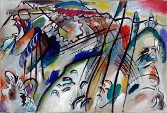

132. Improvisation 28 (second version). Vassily Kandinsky. 1912 CE Oil on canvas.
- Form
- Strongly articulated use of black lines.
- Colors seem to shade around line forms
- Content
- Using schematic means, Kandinsky depicts cataclysmic events on the left and a sense of spiritual salvation on the right
- Context
- Kandinsky wanted the viewer to respond to a painting the way one would to an abstract musical composition: a concerto, a sonata, a symphony
- The artist felt that sound and color were linked; for example, it was possible to hear color
- He used words such as ¨composition¨ and ¨improvisation¨ in the titles of his works, words associated with musical composition
- Kandinsky's works have a relationship to atonal music, which was evolving at this time
- Movement toward abstraction; representational objects suggested rather than depicted